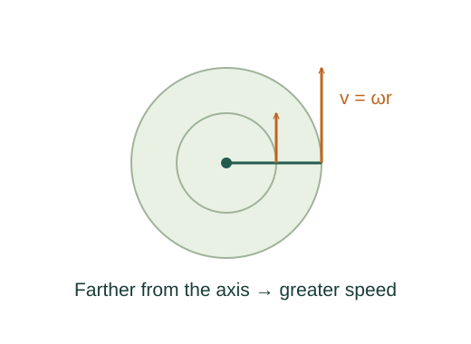

Derive rotational kinetic energy and moment of inertia
A rigid body is made of particles with different linear speeds. Adding their translational kinetic energies produces a rotational energy with a geometry-dependent coefficient: the moment of inertia.
What the symbols mean
r⊥: perpendicular distance to the rotation axis; ω: angular speed; I: moment of inertia about that axis (kg·m²).
When this applies
A rigid body rotating about a specified fixed axis. The kinetic energy below concerns that rotation.
Developing the argument

Find each particle’s speed
A point at perpendicular radius r⊥ travels along a circle. Differentiating arc length gives its speed.
Add the particle energies
Every particle contributes ½mivi². The angular speed is shared by a rigid body, so ω² can be factored out.
A closer lookWhy is particle kinetic energy ½mv²? ↗Derive the work–kinetic energy theoremDefine the geometry factor
The remaining sum is I. For continuous matter, replace it by an integral. Moving the same mass farther from the axis increases I quadratically.
Compute a uniform disk
Divide a thin disk into concentric rings. With surface density σ = M/(πR²), each ring has mass 2πσr dr. Integrate from zero to R.
A worked example
A 2 kg uniform disk of radius 0.50 m has I = 0.25 kg·m². At ω = 4 rad/s its rotational kinetic energy is 2 J.
Derivation behind this calculation ↗A point to keep straight
Moment of inertia must always be paired with its axis. It is not a property of mass alone.
Check the assumptions and derivation ↗